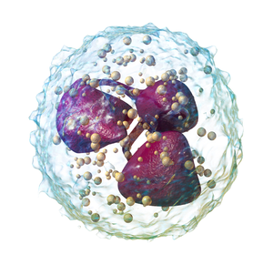
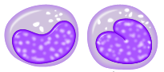

В организме человека
Фагоцитоз - от древне-греческого φαγεῖν «пожирать» + κύτος «клетка». Это стандартный процесс иммуной системы человека при котором клетки человека пожирают нежелательные бактерии в организме.
К таким клеткам можно отнести нейтрофилы, моноциты, макрофаги, дендритные клетки, тучные клетки. Они все выполняют одну функцию. Защищают организм человека от вирусов, микробов, бактерии и.т.д.
Нейтрофилы
Нейтрофилы - это гранулоциты, то есть зернистые лейкоциты (более подробная инфрормация про гранулоциты и агранулоциты здесь: Кровь). Основаная функция лейкоцитов - поддержание гомеостаза. Что же до нейтрофилов, то их главная функция - фагоцитоз вредных микроорганизмов. Они, также в отличии от других лейкоцитов способны проникать даже сквозь те ткани, через которые другие лейкоциты не могут пройти.
Моноциты
Моноцит - от греческого μονος — «один» и κύτος — «вместилище», «клетка». Это самая большая фагоцитическая клетка в организме человека, чья задача первой добраться до потенциального места возникновения патологии, фаготицировать клетку и обеспечить развитие синдрома системного воспалительного ответа (то есть вызывает воспаление. Высокая температур или гипотермия, тахикардия, тахипноэ, гипервентиляция лёгких, лейкоцитоз, лейкопения).
Макрофаги
Макрофаги - от древнегреческого μακρός — большой, и φάγος — пожиратель. Это главный фагоцит в организме человека, чья задача - фагоцитоз. Они приходят на место и едят либо сами патогены, либо остатки от них. Также они поедают опасные и другие чужеродные в организме человека частицы. Также они - первые клетки, что встретят патогены так находятся во всех органах и являются певрой линией защиты организма, пока другие фагоциты только добираются по крови до поражённого участка тела.